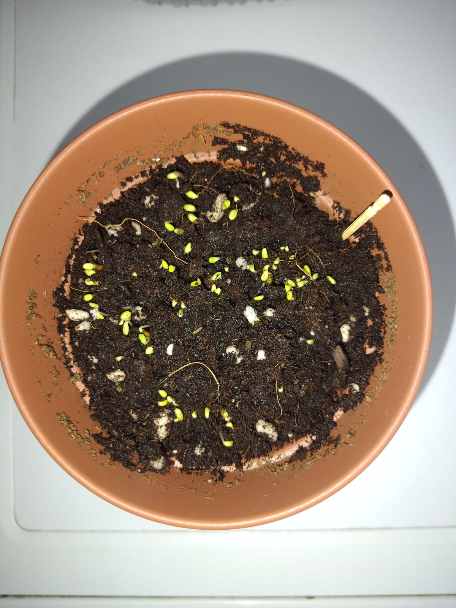
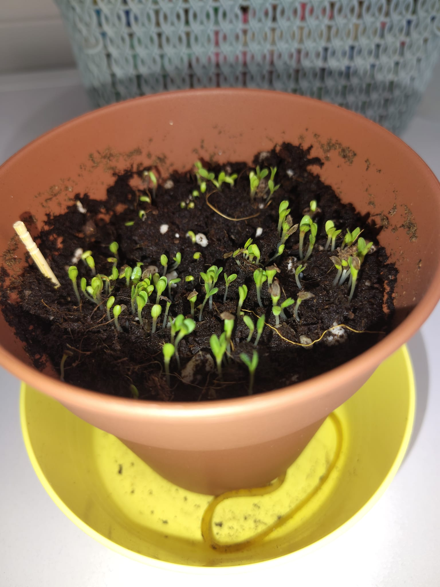
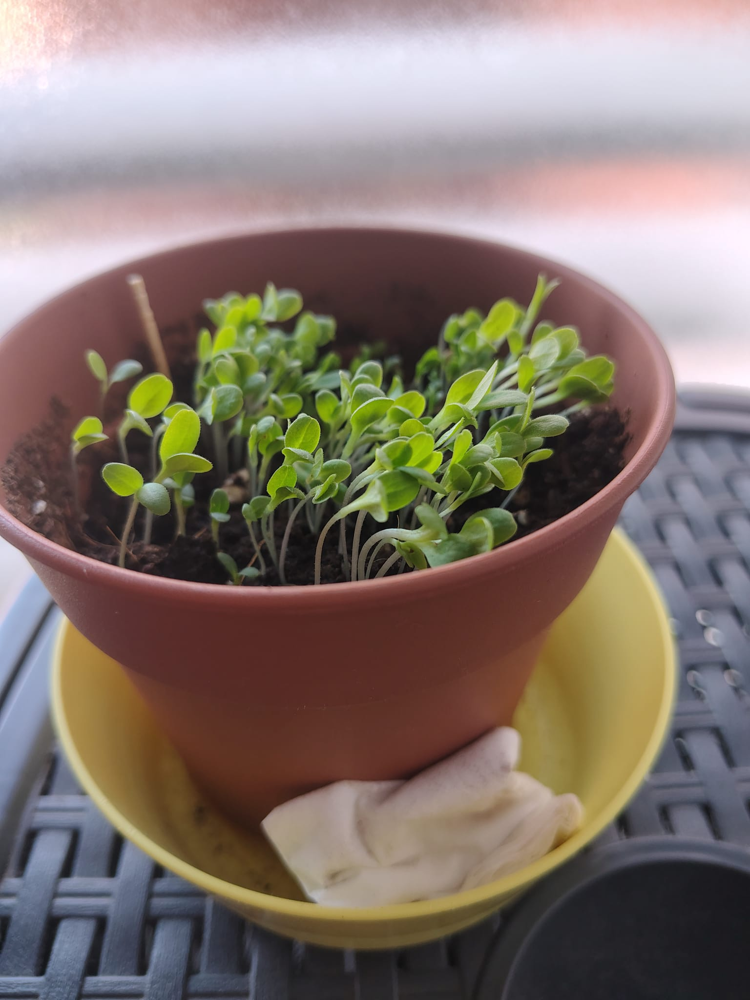
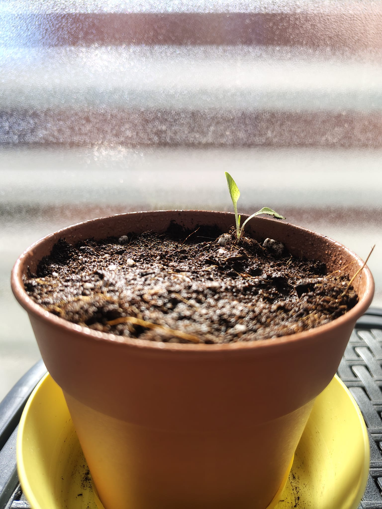
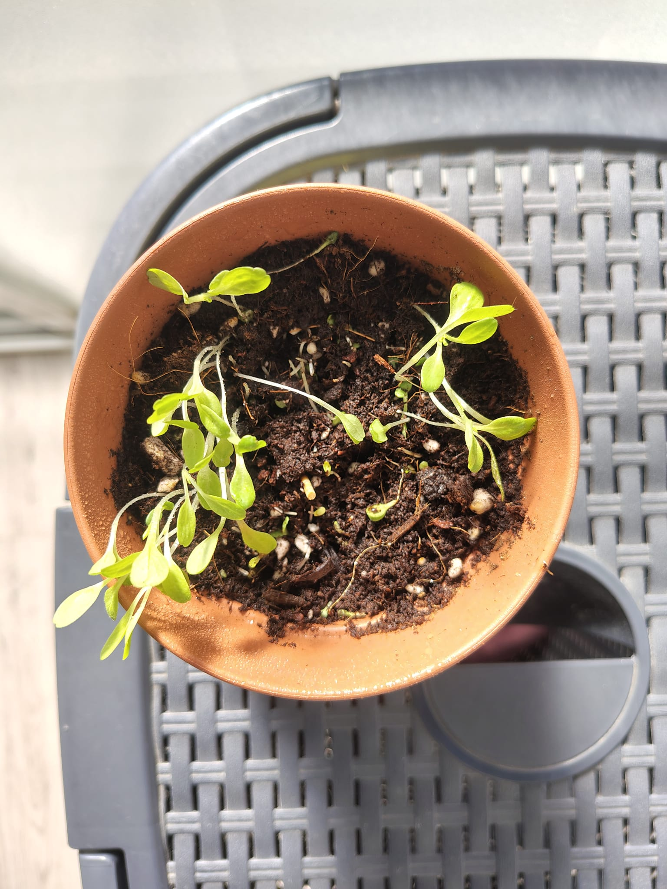

Montar un minihuerto en casa y poder aprovecharlo es muy sencillo, por difícil que parezca. Necesitas muy poco espacio y, si solo quieres plantar verduras sencillas o flores, apenas necesitas estar pendiente.
Yo empecé este año como un experimento y por ahora todo me ha ido bastante bien. Para empezar compré macetas pequeñitas para que no me ocupasen mucho espacio, pero ten en cuenta que cuanto más grandes sean, más va a crecer tu planta y más bonita se va a ver.
1. La elección: Lechuga 4 estaciones
El primer cultivo que planté fueron las lechugas. Para conseguirlas necesité sustrato universal y semillas. En mi caso elegí la variedad "Lechuga 4 estaciones", porque me había estado informando y son bastante fáciles de cuidar y crecen rápido en interior.

El primer paso del proyecto: preparando los semilleros.
2. Cómo plantar las semillas paso a paso
Plantarlas es muy sencillo. Mi recomendación es que primero plantéis en semilleros y después las trasladéis a macetas individuales. Los semilleros los venden en cualquier vivero, son muy baratos y no ocupan nada.
Simplemente echas el sustrato en la maceta (o en el semillero si prefieres que la semilla germine ahí, lo cual es mejor en mi opinión), lo remueves para que se airee, y dejas la parte de arriba plana para que la superficie sea uniforme.
Lo riegas todo bien, asegurándote de que el exceso de agua salga por debajo de la maceta o del semillero. Si al mojarlo la tierra se ha hundido un poco, vuelves a echar tierra hasta que quede justo a la altura máxima y vuelves a dejar la superficie planita.
Después echas unas pocas semillas de lechuga bien repartidas por toda la superficie y las tapas con muy poquita tierra, solo la suficiente para que no se las vea. Ahora simplemente las dejas al sol, asegurándote de que la tierra esté siempre húmeda, y ya está.

Los primeros días tras plantar las semillas. Empieza la magia.
3. El aclareo: seleccionando la más fuerte
Una vez hayan pasado 2 semanas y ya tengan un porte decente, toca hacer un aclareo, o en el mejor de los casos, un traslado del semillero a la maceta definitiva.

Así se ve la maceta cuando germinan casi todas las semillas. Es hora de aclarar.
Si plantaste directo en maceta: Deja solo 5 brotes de lechuga. Espera 1 semana más y entonces arranca los demás, dejando solo el que mejor pinta tenga (si está en el centro, mejor que mejor).

Los brotes van ganando fuerza. Pronto habrá que elegir solo al más fuerte.
A veces nos da un poco de pena arrancar brotes sanos, pero es un paso vital. Si dejas todas las plantas en la misma maceta, van a competir por los nutrientes y el espacio, y ninguna llegará a crecer en condiciones.


El resultado del aclareo. Al dejarles su propio espacio, crecerán sin estorbarse.
4. Cuidados básicos en interior
A partir de aquí simplemente tienes que regar unas 2 veces por semana y dejar que crezcan a su ritmo. Asegúrate de que tengan muchas horas de luz al día, pero intenta que no les dé el aire de manera directa cuando aún tengan un tallo muy pequeñito.

La recompensa: hojas de lechuga verdes, frescas y listas en pocas semanas.
Un pequeño truco: Si ves que el tallo se dobla hacia un lado, puedes ponerles un poco de tierra extra alrededor de la base o usar alguna piedrecilla para apoyarlas y que se vuelvan a poner tiesas.
<<<<<<< HEAD